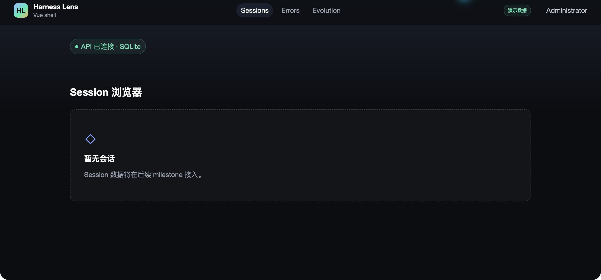
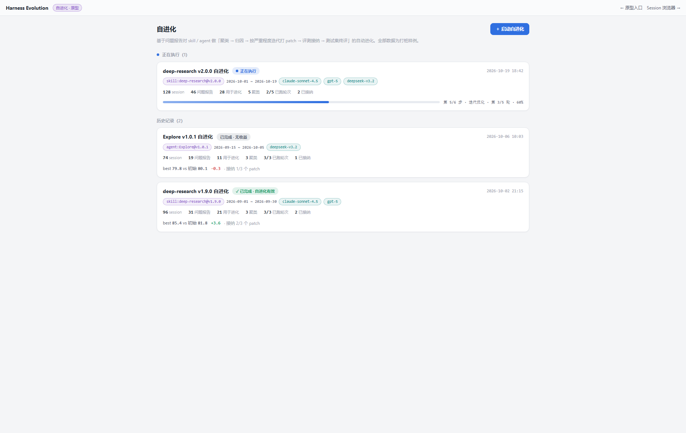
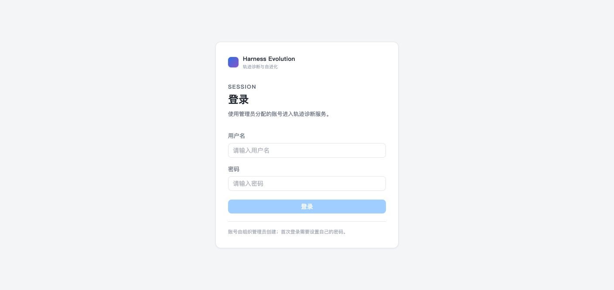
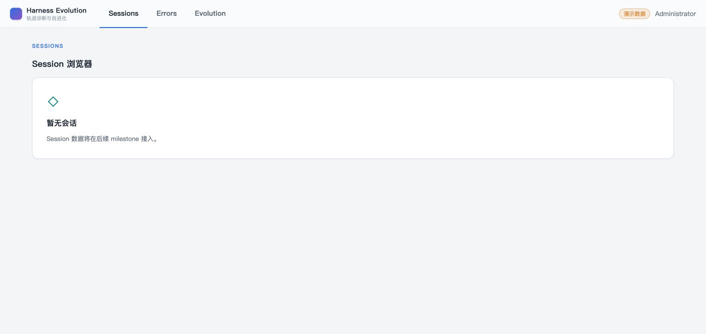
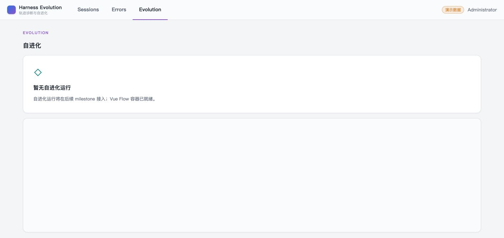
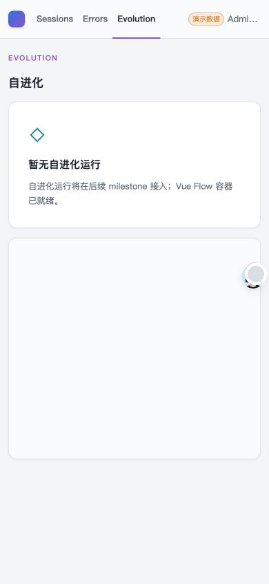
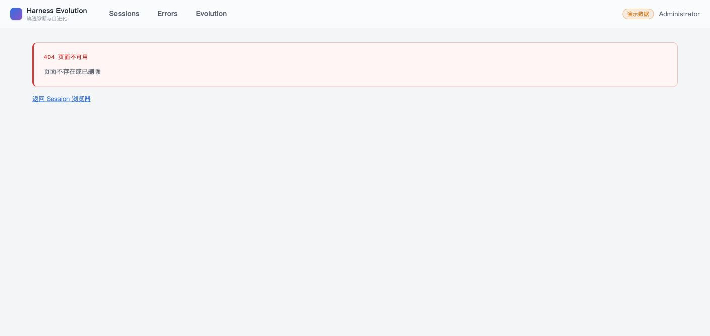

- Issue
- #92 · UI prototype alignment
- PR
- #93
- Commit
- 0db8f8d
- Prototype
- harness-evolution.html · light-first baseline
- Runtime
- FastAPI + SQLite + Vite + Chrome
- Scope
- Shared shell, auth, states, placeholders
Harness Evolution · PR #93
m2-09 原型 UI 对齐集成冒烟
真实 Chrome、Vite 与 FastAPI 已验证共享壳层从深色开发界面迁移到原型定义的亮色视觉系统。页面背景、顶栏、卡片、品牌、导航激活线、认证页、错误态与 390px 响应式均符合原型和 fullstack-design 的已实现范围。
12检查场景
12通过
0缺陷
0意外控制台消息
Environment and Artifact
2026-10-25 · macOS · Chrome · 1408px / 390pxScenario Matrix
1 fixed · 1 info · 9 pass · 1 manual| # | 场景 | 结果 | 观测 | 证据 |
|---|---|---|---|---|
| 01 | 暗色 before 基线 | FIXED | 旧实现使用近黑页面、白色正文、Harness Lens 与胶囊导航；已由亮色原型基线替换。 | screenshots/01-before-dark-sessions.jpg screenshots/03-before-dark-evolution.jpg |
| 02 | 原型参考 | REFERENCE | 原型以浅灰页面、白色卡片、蓝紫业务色和紧凑数据层级作为最终视觉基准。 | screenshots/04-prototype-evolution-list.png screenshots/05-prototype-family-tree.png |
| 03 | 页面与顶栏令牌 | PASS | body 为 rgb(244,245,247)，topbar 为 rgb(250,251,252) 且高度 56px，内容卡片为纯白。 | screenshots/08-after-sessions.png computed style assertions |
| 04 | 品牌与导航 | PASS | 品牌为 Harness Evolution；Sessions/Errors 使用蓝色下划线，Evolution 使用紫色下划线。 | screenshots/08-after-sessions.png screenshots/10-after-evolution.png |
| 05 | 登录页 | PASS | 登录页无顶栏，使用浅灰页面与白色认证卡片；品牌、输入和按钮层级符合原型令牌。 | screenshots/06-after-login.png |
| 06 | 强制改密页 | PASS | 首登改密页保持亮色认证卡片，无受保护导航，390px 下无横向溢出。 | screenshots/07-after-change-password.png real Chrome E2E |
| 07 | Sessions 空态 | PASS | 白色内容卡、蓝色激活线和真实空态呈现；未伪造 Session 领域数据。 | screenshots/08-after-sessions.png |
| 08 | Errors 与 Evolution 占位 | PASS | Errors 与 Evolution 使用统一亮色卡片和后续 milestone 文案；Evolution 激活线为紫色。 | screenshots/09-after-errors.png screenshots/10-after-evolution.png |
| 09 | 390px 响应式与 demo | PASS | 390px 下 scrollWidth=clientWidth=390；演示数据橙色文字可读，品牌链接仍有无障碍名称。 | screenshots/11-after-evolution-390.png computed style assertions |
| 10 | 404 亮色错误态 | PASS | 404 展示浅红错误卡片、红色左边框和可读正文，壳层与导航保持可用。 | screenshots/12-after-404.png |
| 11 | 浏览器控制台 | PASS | 正常登录、强制改密和三入口导航期间未捕获 warning/error。 | Chrome dev logs count=0 |
| 12 | 领域页面边界 | OUT OF SCOPE | 真实 Session、问题详情与自进化运行页仍由后续 milestone 交付；本报告不把占位内容冒充已完成领域页面。 | Issue #92 non-goals fixture/domain smoke reports |
Issues and Observations
No defects foundNo defects were found.
Evidence
7 screenshots






Automated Coverage Assessment
4 areas reviewed| 区域 | 覆盖 | 结论 | 建议 |
|---|---|---|---|
| 共享壳层 | Computer Use + computed style | 页面、顶栏、卡片、品牌、导航和 390px 视觉令牌通过。 | 后续领域页面必须复用同一原型令牌和组件语言。 |
| 认证页面 | Computer Use + 真实 Chrome E2E | 登录和强制改密在 1408px/390px 下使用亮色白卡且无横向溢出。 | 保留认证页无 TopNav 的布局边界。 |
| 三态与 404 | 组件测试 + 真实 Chrome | Loading/Empty/Error/404 使用统一亮色表面和语义色。 | 后续页面直接复用共享状态组件。 |
| 领域页面 | 不在本 issue 范围 | Session 浏览、问题详情与自进化运行数据由后续 milestone 实现。 | 用对应原型章节和截图验收，不在本阶段伪造内容。 |
Conclusion
通过当前已实现的共享 UI 已从错误的深色开发工具风格恢复为原型定义的亮色视觉系统，未发现需要阻断合入的视觉或交互缺陷。
- 原型令牌、56px 顶栏、品牌和导航激活语义已落地。
- 登录、强制改密、共享三态和三个占位页均使用亮色基线。
- 真实领域页面仍等待各自 milestone，不在本 issue 中伪造。
证据源：Computer Use 截图、原型稳定截图、computed style、Chrome 控制台与自动化 E2E。生成 HTML 不应手改。